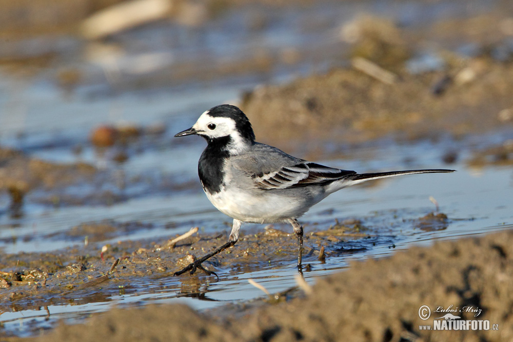

Linavästrikud
vaata pilte
See leht on loodud linavästrikute tutvustamiseks. Linavästrikud on väikelinnud.
uuri lähemalt

Omadused
- Välimus
- Keha
- Varblase suurune
- Sihvakas
- Peenikesed jalad
- Pikk sirge saba
- Sulestik
- Hele
- Põhiliselt hall ja valge
- Eluviis
- elab avatud ja pooleldi avatud maastikul
- jookseb kiiresti ja osavalt